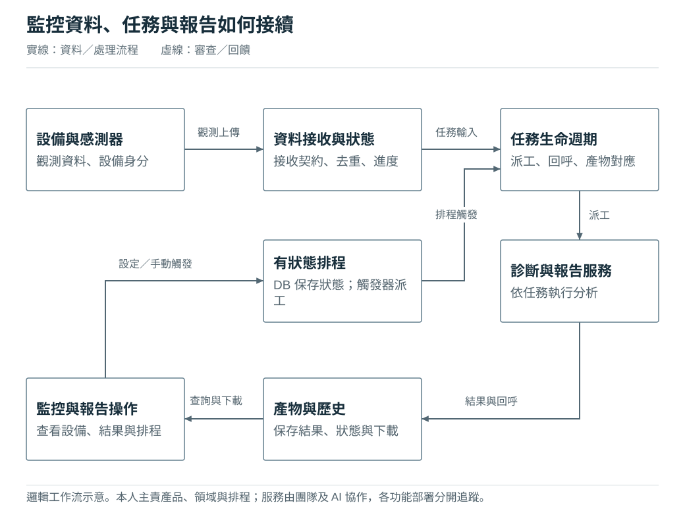

情境與目標
設備維護需要先掌握狀態、追查異常，再取得分析與報告；這些步驟必須連成可持續運作的產品流程。
- 看見設備狀態：從總覽辨識需要處理的設備，再深入趨勢與資料。
- 接續分析與報告：耗時工作另外派工，保留進度、結果與歷史。
- 維持產品演進：處理資料同步與控制權，逐步解除 1.0 依賴。

系統架構與流程
架構說明
- 輸入
- 設備、感測器資料與使用者設定。
- 處理方式
- 將資料轉為設備狀態與分析任務；排程、服務派工及報告操作各自保存狀態。
- 產出
- 監控、診斷、報告及控制回饋；各功能的歷史驗證與現場部署分開追蹤。
流程圖

操作介面與互動
總覽把設備狀態、警示與操作入口放在同一閱讀路徑，讓使用者先辨識需要處理的設備。

1 / 1
更多技術細節
即時概況與長時間分析分開
概況回答現在需要處理什麼；長時間分析回答狀態如何變化。查詢先呈現摘要，耗時分析另建任務，保存結果、進度與缺資料狀態。
平台狀態是指令依據
指令與確認以平台持久狀態及 HTTP 路徑為準，MQTT 作喚醒通知，定期 heartbeat 補足通知失落。完整狀態更新與獨立波形請求採不同覆蓋規則；完整運行範圍依版本另驗。
共同建構與交付的分工
我主導產品與領域設計，負責排程、跨服務工作流、資料同步及整合驗證。主管提供初始方向，設計師參與主儀表板；工程夥伴負責各自服務與基礎設施，AI agents 參與實作及測試，變更由人工審查後決定發布。
新舊系統如何銜接
2.0 的新功能建構，與舊系統的相容、遷移及替換同時推進。
- 01
新舊共存
同步設備與資料，先保護 2.0 新增的設定及功能。
- 02
逐步替換
轉移設備控制權，建立遷移稽查，將功能改接 2.0 原生流程。
- 03
獨立運作
目前 2.0 已可不依賴 1.0，持續新增功能及版本交付。
先界定資料由誰更新
我建立資料同步與欄位保護，明確區分舊系統可更新的內容與 2.0 自己管理的設定，讓共存期間的新功能與使用者設定能被保留。
把設備控制權移到 2.0
我參與重整設備管理與控制權責，將狀態轉移規則收斂到 2.0，逐步縮小舊系統的責任；與工程夥伴依各自分工完成整合及驗證。
讓舊資料遷移能被查核
整合遷移清單與檢查工具，要求感測器有明確對應；缺號或對應不明時中止並回報，補正清單後重新驗證，降低設備資料錯置風險。
成果與驗證範圍
已完成的工作
2.0 已可獨立於 1.0 運作，並整合報告服務、平台派工與下載功能，持續推進產品開發及版本交付。
驗證與限制
2.0 已可獨立運作；個別客戶及資料的切換進度依各版本追蹤。